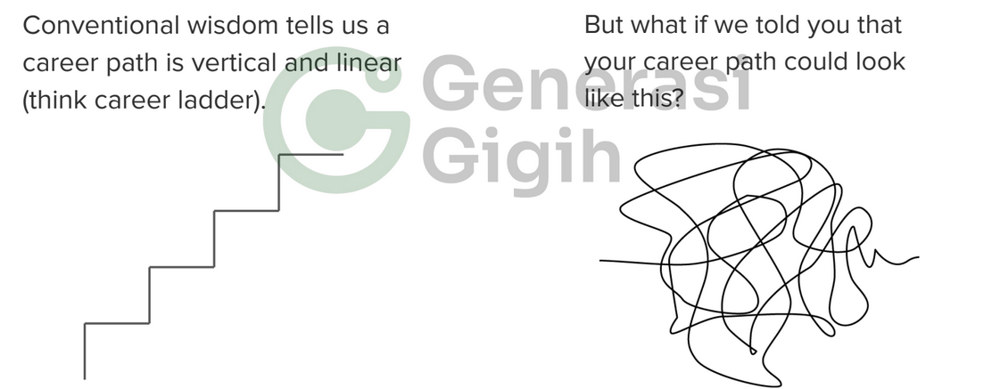

Reflective Essay: Career Growth Path
This is are my reflective-essay after attending career growth path class that given by kak David Paulus, the first class in soft skills & career readiness.
since it’s the first class, most of the topic are theory level about career growth path. we talk about Purposes, personal values, and PGP (can you guess what is it?), and also Kai zen mindset. i will talk about each of the topic in this essay, briefly of course, since i don’t want to make this essay too long to read :D. to keep this blog on track, our learning objectivity for this class are:
Learn to identify core values and how to live into them
Learn how to create your own Personal Growth Plan (PGP)
Commit to Your Goal with KaiZen
Purpose and Personal Values
In the first class of soft skills and career readiness, we discussed the importance of identifying our core values and creating a Personal Growth Plan (PGP) to achieve our goals. One of the key topics we covered was the concept of purpose.
Purpose is what defines us as individuals. It gives us meaning, happiness, and the drive to keep going. It is what we love and what we want to achieve in our lives. Without purpose, we can easily lose our way.
While it’s okay not to have a clear purpose in life yet, there are some universal truths about purpose that we should keep in mind. Purpose is something that we must actively seek out. It is a universal need that drives us to do something and make an impact on those around us. Purpose is a verb, something that we work on through service to others.
In conclusion, finding our purpose is essential to living a fulfilling life. It is what gives us direction and motivates us to achieve our goals. By identifying our core values and creating a PGP, we can work towards discovering our purpose and living a life that is true to ourselves.
During the first class of soft skills and career readiness, we learned about the importance of identifying our personal values. Personal values are the principles and moral values that we hold true and believe in. They act as fuel that makes a person able to continue to stick to their purpose.
While it’s hard to define purposes directly, we can try to define what personal values we will stick to even in the lowest point of our lives. To help us define our personal values, our instructor gave us some tips:
- Start by selecting 10 or even 15 values.
- Narrow down your options by asking yourself these questions for each selected value:
- Does this define me?
- Is this who I am at my best?
- Is this a filter I use to make hard decisions?
By identifying our personal values, we can stay true to ourselves and make decisions that align with our beliefs. This is essential to living a fulfilling life and achieving our goals.
Rethinking What A Career Path Looks Like
Before we dive into PGP, let’s talk about career paths. When we think about career paths, we usually imagine a career ladder. But is that really what it looks like?

The second image shows a more realistic career path that happens in real life, which is a squiggly career that isn’t limited to the conventional corporate ladder; instead, it is fluid and multi-directional. This means you can move vertically, laterally, or in a whole new direction with a different specialization altogether.
With the possibility of chaos, you can grow your career in many different directions. But growing your career requires a plan.
PGP (Personal Growth Plan)
A Personal Growth Plan (PGP) is a customized blueprint for your life. It starts with your purpose and values, and helps you determine the habits, skills, knowledge, and goals you need to achieve to live a fulfilling life. Here’s a rough guide to creating your own PGP:
- Establish a clear vision by adding your values and purpose to your PGP.
- Look for development opportunities through experience, exposure, and education.
- Formulate action plans with S.M.A.R.T. goals.
- Review and evaluate your progress regularly to stay on track and make adjustments as needed.
KaiZen
KaiZen is a Japanese philosophy that helps us fulfill our plans, whether they are habits or long-term goals. The idea is simple: commit to one minute per day to work on your plan, and you can do more than one minute if you want to. The point is to commit to doing your plan every day, even if it’s just for one minute. This is better than committing to one hour but only on a monthly basis.
Closing
That’s all for my reflective essay on the first class of soft skills and career readiness. It was a bit theoretical, as it was our first class on career readiness. See you in the next reflective essay, as I think it will be another assignment on this topic…